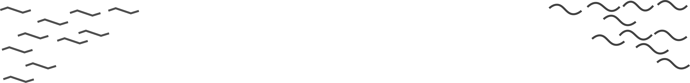
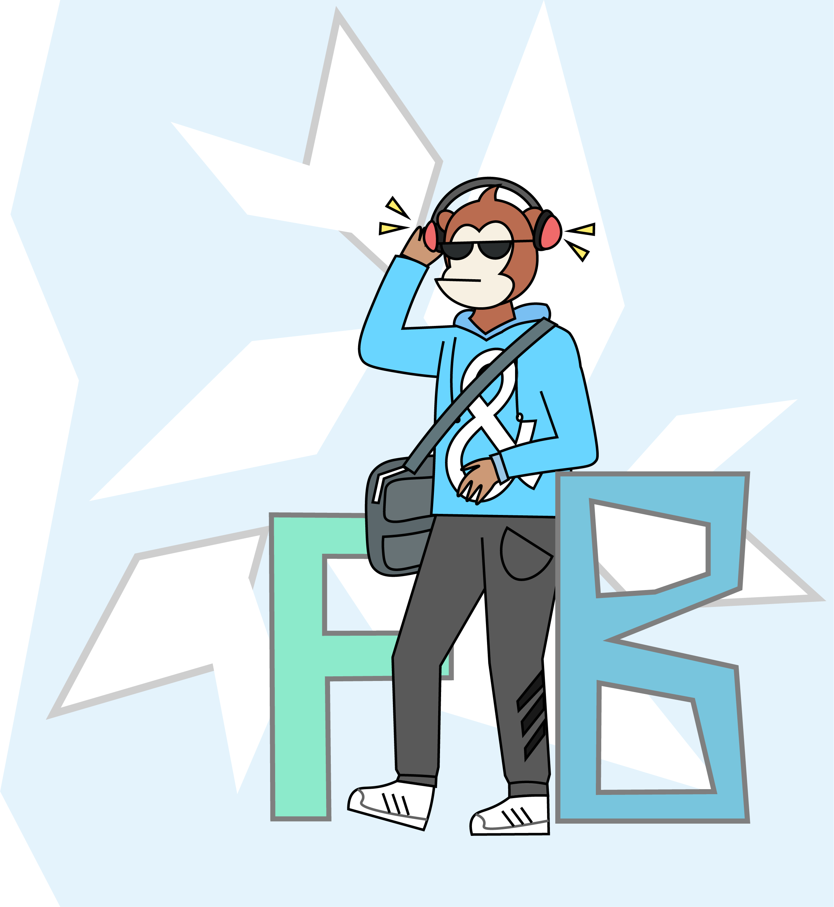
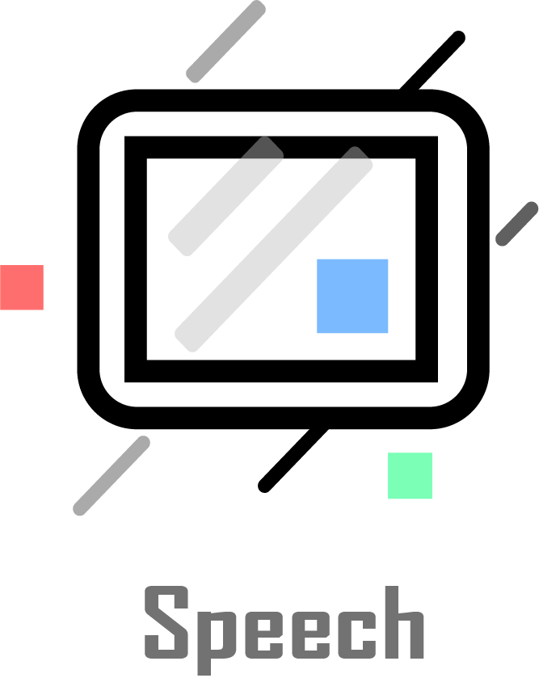

"开发程序猿"
前端：前端开发是创建Web或app视觉界面呈现给用户的过程通过HTML，CSS及JavaScript以及衍生出来的各种技术、框架、解决方案，实现互联网产品的用户界面交互。
后端：通常也称服务器端开发。不对用户显示,负责处理前端的请求，进行逻辑处理和数据交互。
客户端: 移动应用开发是为了小型、无线计算设备编写软件的流程和程序的集合，例如智能手机或平板电脑。

“Stay Hungry,Stay Foolish”
产品经理/UI设计(PM/UI)
PM需要拥有缜密的产品逻辑思维，研究用户心理，负责产品的整个生命周期。
PM参与产品的UI和交互设计，为设计和开发确定产品原型，能够将产品变得有个性,操作变得舒适简单、自由。
PM需要一定的文档能力和沟通能力，能够在团队合作的过程中跟各个角色进行有效沟通。
"好的软件的特征是,明明没用过，但总觉得用过似的。"
PM是针对某一项或是某一类的产品进行规划和管理的人员。

AI/算法(AI/AIGO)
人工智能站在了风口，机器学习和深度学习是它的分支，是团队仍在探索的方向。
当下AI技术的应用涉及到图像处理、自然语言处理、推荐系统和无人驾驶等领域。
AI的核心就是算法和性能。充满科技感的背后，是大量的数学统计理论和计算机知识。
"路漫漫其修远兮，非大毅力者不能"
人工智能站在了风口，机器学习和深度学习是它的分支，是团队仍在探索的方向。

安全攻城狮(Sacurity)
主要涉及网络攻防、漏洞挖掘，能够代表团队参加CTF安全赛事。
互联网安全从其本质上来讲其实就是互联网上的信息安全。
网络安全攻城狮是拥有扎实基础的SuperHacker,同时具有强大的自学能力。
网络安全攻城狮能够识别IT系统的优缺点。并且了解黑客以及网络犯罪手段,且精通网络安全技术:包括服务漏洞扫描、程序漏洞分析检测、病毒木马防范等。
"我们需要的不是脚本小子，而是对底层原理了如指掌。"
主要涉及网络攻防、漏洞挖掘，能够代表团队参加CTF安全赛事。

"耐心、毅力是我们必备的品质，每周我们会至少花30小时在实验室中。以保证技术的精进。"

每周我们会举行一次技术例会，用来汇报我们的学习内容，供成员之间交流学习。
每周我们会举行一次技术例会，用来汇报我们的学习内容，供成员之间交流学习。

多元化是我们的特色。在这里，你可以拥有多种方向选择，前后端、安全、AI、算法、产品等。